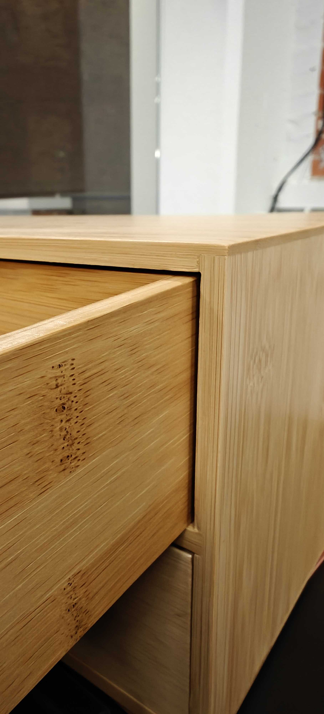
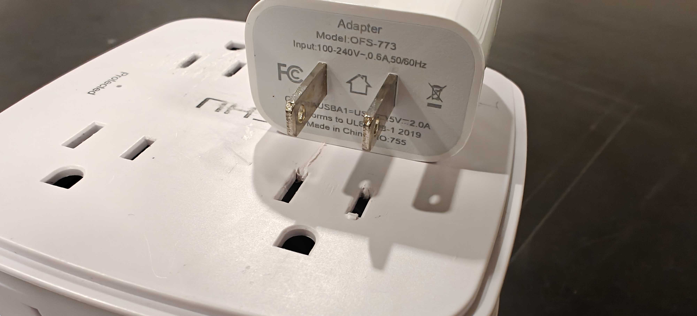
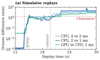
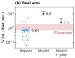
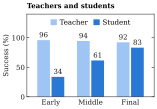

Real-to-Sim-to-Real
at the Last Millimeter
1 Toyota Technological Institute at Chicago 2 University of Chicago
* Equal contribution
Task and Setup
(a) Drawer and cabinet

Top: 1.5 mm · Side: 2 mm(b) Charger and outlet

2.2 mm slot − 1.5 mm blade = 0.7 mmA 6-DoF Seeed reBot B601-DM picks up a drawer and inserts it into a cabinet, or transfers a phone charger between adjacent outlets. The arm usually repeats a motion within 1 mm, but friction stops its joints up to 7° short of their targets. Our best rigid model still misplaces the wrist camera by a median 10 mm. Even within simulation, replaying the same action sequence on GPU instead of CPU, or with a smaller timestep, shifts the final drawer position by 1–2 cm. The policy must tolerate errors larger than the insertion clearances.


(a) Drawer insertion
(b) Charger insertion
Abstract
We study drawer and charger insertion with 0.7–2 mm clearances on a roughly $1,000 arm through real-to-sim-to-real learning. Coding agents write scripted teachers that read the simulator state, and image-based student policies imitate them. Although our simulator cannot match the arm to within the clearance, the students succeed in 12/20 drawer and 18/20 charger trials on the real arm. We report three lessons. First, scripted teachers overfit the simulator less than reinforcement learning (RL) teachers, which learn behaviors that work only in simulation. Second, without human guidance, coding agents can edit scripted teachers to be much easier for students to learn. Third, without force sensors, the student senses contact from commanded and measured joint positions, so it need not line the part up perfectly before contact.
Training Pipeline
We fit the Isaac Sim drawer model to ten teleoperated demonstrations and build the charger model from one, measuring geometry in its images. Our teachers are Python programs written and revised by coding agents. They read simulator state and label actions for the student.
The student uses a fine-tuned DINOv2 visual encoder with a multilayer perceptron action head. It sees scene and wrist images, plus commanded and measured joint positions, and predicts short sequences of actions, called action chunks. We train it with online DAgger, in which the teacher labels the states the student visits. Training randomizes masses, friction, grip force, lighting, colors, backgrounds, and camera poses.
Real-World Results
| Task | Scripted-teacher student | RL-teacher student |
|---|---|---|
| Drawer | 12/20 (60%) | 6/20 (30%) |
| Charger | 18/20 (90%) | 0/20 (0%) |
Drawer success includes the final push to close. Charger success includes insertion and release.
On the charger, the RL student succeeds as often as the scripted-teacher student in simulation: 85.1% versus 83.9%. On the real arm, their success rates are 0/20 and 18/20, respectively.
Three Lessons
1. Scripted teachers overfit the simulator less than RL teachers
The demonstrations used to fit a simulator do not reveal subtle contact details. Even under randomized physics, RL teachers can exploit errors in these details. One RL teacher grasped the drawer with only the fingertips of the gripper. This grasp was stable in simulation but unstable on the real arm, making insertion nearly impossible.
A scripted teacher does only what its code states, so it has less room to exploit these errors. Correcting the grasp through RL required task-specific reward shaping and retraining; a coding agent can fix a script in minutes. We spent roughly two weeks developing RL teachers and two days developing scripted teachers, with coding agents assisting both.
2. Successful scripts must also be learnable
A coding agent can make scripts easier for image-based students to imitate without human guidance. Our teachers’ privileged inputs are the objects’ true poses and, for the drawer, finger contact—all quantities the student can estimate. Even so, the early drawer teacher succeeded over 90% in simulation, while its student succeeded only 34% of the time.
The teacher’s gripper command flipped at a sharp pose threshold, giving nearly identical views opposite commands. The agent proposed and implemented smoothing these rules, raising student success to 61% while the teacher stayed above 90%.

A single-action student can stall where the teacher pauses: the unchanged state keeps producing the same command. One such student succeeded 90% in simulation but stalled on the real arm, so we adopted action chunking.
3. Use contact to resolve alignment uncertainty
The arm has no joint torque, wrist force/torque, or tactile sensors. Under joint proportional–derivative (PD) control, the difference between commanded joint positions, qdes, and measured joint positions, q, provides an indirect cue to contact resistance. The student receives both signals alongside images.
For both tasks, the student presses the part against the mating surface and slides it until it aligns with the opening and enters. The part therefore need not be aligned to within the insertion clearance before contact.
In a test using a stuck real drawer recording, we hold the images and measured joints fixed and shrink only the commanded–measured gap in the policy’s input. The student changes from stopping to commanding another push, showing that it uses the gap to sense when the drawer is blocked.
How Compliance Helps Insertion
Finite-gain joint PD control lets the arm yield when contact blocks its commanded motion. Maintaining pressure while changing alignment lets the surface guide the object toward the opening. Compliance and corrective motion work together: pressure alone cannot correct a lateral misalignment. Orange denotes the commanded pose; cyan denotes the actual or measured pose.
Domain Randomization
The student encounters variation in object placement, physical parameters, camera poses, appearance, backgrounds, and clutter. These 5 × 5 atlases show separate scripted-teacher rollouts across randomized scenes. Display exposure is brightened for visibility; the underlying trajectories and training randomization are unchanged.
Drawer insertion · 25 simulated scenes
Charger transfer and insertion · 25 simulated scenes
All videos include playback speed and step counters. Use the video controls to pause, seek, or view full screen.